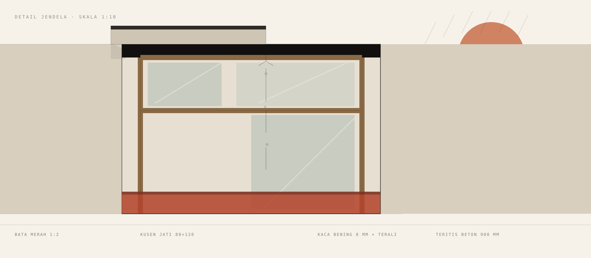

Karya / 10Hunian · Solo · 2026
Rumah
Ibu
Rumah untuk tiga generasi yang tetap bisa menutup pintu — tiga sayap yang mengelilingi satu halaman.
- Lokasi
- Solo
- Luas
- 204 m²
- Tahun
- 2026
- Peran
- Arsitektur, interior, lanskap
- Tim
- Aria Wibowo, Sekar Prameswari, Larasati Hutomo
- Status
- Selesai, dihuni

Klien — seorang ibu 68 tahun dengan dua anak dewasa dan tiga cucu — meminta rumah yang “bisa hidup bersama, tapi tidak harus selalu bersama”. Permintaan itu kami terjemahkan menjadi tiga sayap yang mengelilingi satu halaman, bukan satu rumah besar dengan banyak kamar.
Sayap barat untuk ibu: satu kamar, satu ruang tamu, dapur yang bisa ditutup. Sayap timur untuk anak dan pasangan: dua kamar, ruang kerja, teras kecil. Sayap utara untuk cucu: satu kamar besar yang bisa dibagi dua. Ketiganya terbuka ke halaman tengah, tetapi masing-masing memiliki pintu geser yang bisa menutup akses ke halaman.
Halaman tengah bukan taman hias. Ia adalah ruang yang dipakai bersama: tempat makan panjang, tempat bermain, tempat menjemur. Pohon jambu di tengahnya sudah ada sebelum kami datang; kami membangun di sekelilingnya, bukan sebaliknya.
“Rumah untuk tiga generasi yang tetap bisa menutup pintu.”
Material dipilih karena murah dirawat. Bata dari Solo, genteng dari Klaten, kayu jati dari Kudus. Lantai andesit dipasang dengan nat lebar supaya bisa diganti satu per satu. Semua pintu geser memakai rel baja sederhana yang bisa diperbaiki tukang lokal.
Setelah tiga bulan dihuni, cucu pindah ke kamar ibu selama dua minggu karena sakit. Pintu geser ditutup; halaman tetap terbuka. Itu ukuran keberhasilan proyek ini.

Proyek berikutnya
Rumah Tumbuh
Hunian · Jakarta Selatan · 2024